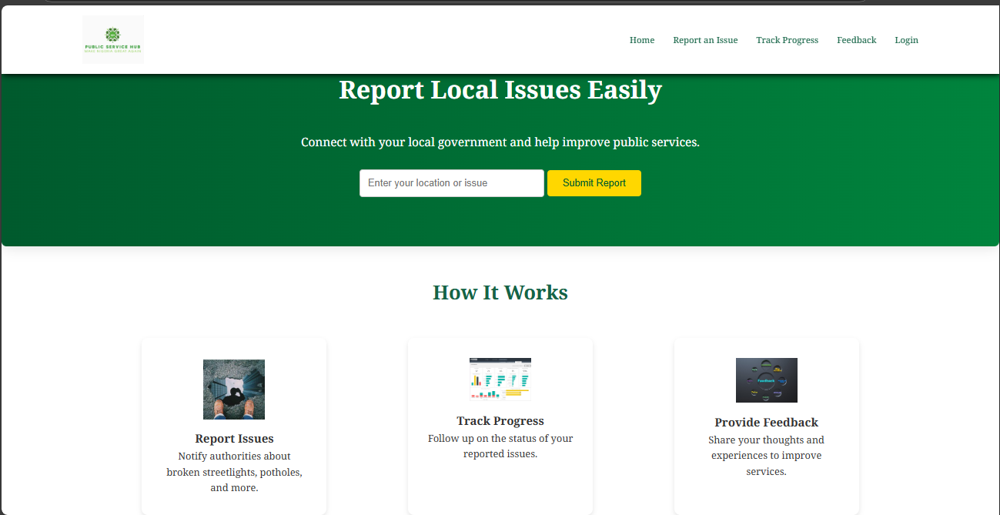
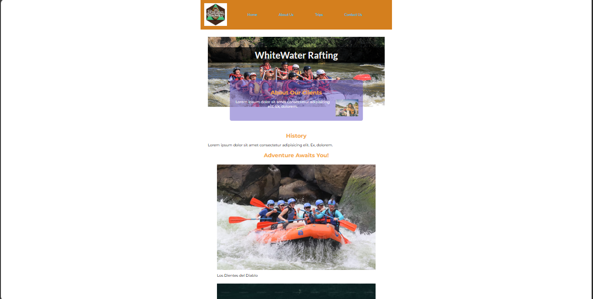
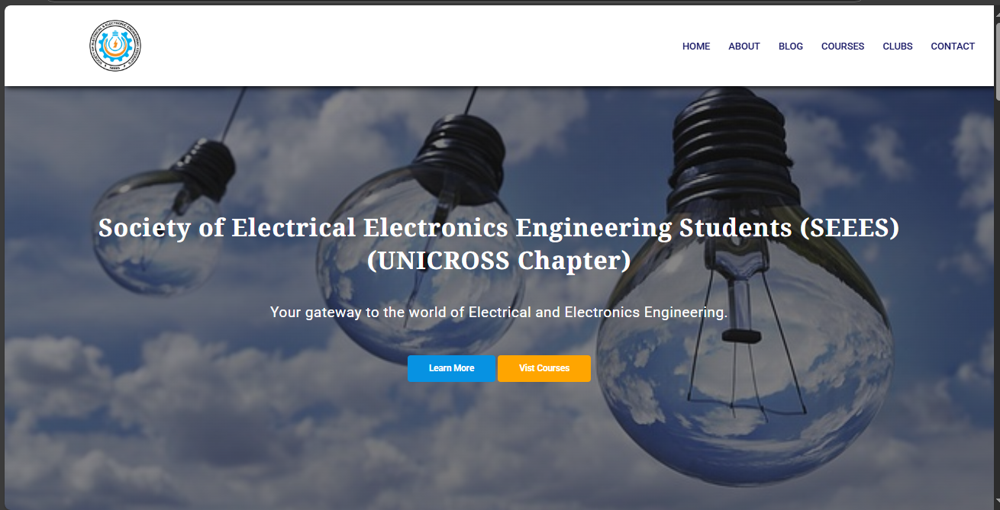
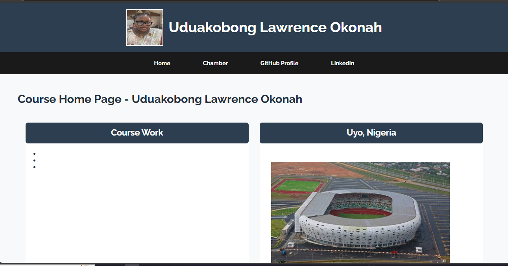

Hello! My name is Uduakobong Okonah, and I am currently studying Electrical and Electronics Engineering at the University of Cross River State (UNICROSS). Alongside that, I am also pursuing Software Development at Brigham Young University–Idaho (BYUI).
I am passionate about any thing Technology/Engineering related. I enjoy learning new things and working on creative projects. I am a passionate web developer with experience in HTML, CSS, and JavaScript. I love creating interactive and user-friendly web applications.
My interests also extend to AI and cybersecurity
In my free time, I love engaging in activities that keep me inspired and entertained. Here are some of my favorite hobbies:
Here are some of the projects I have worked on:
Check out some of my favorite pictures and designs.
   Here’s what people have to say about my work:
“A highly skilled developer with a great eye for detail!” - Client A
“Delivers clean, well-structured code and innovative solutions.” - Client B